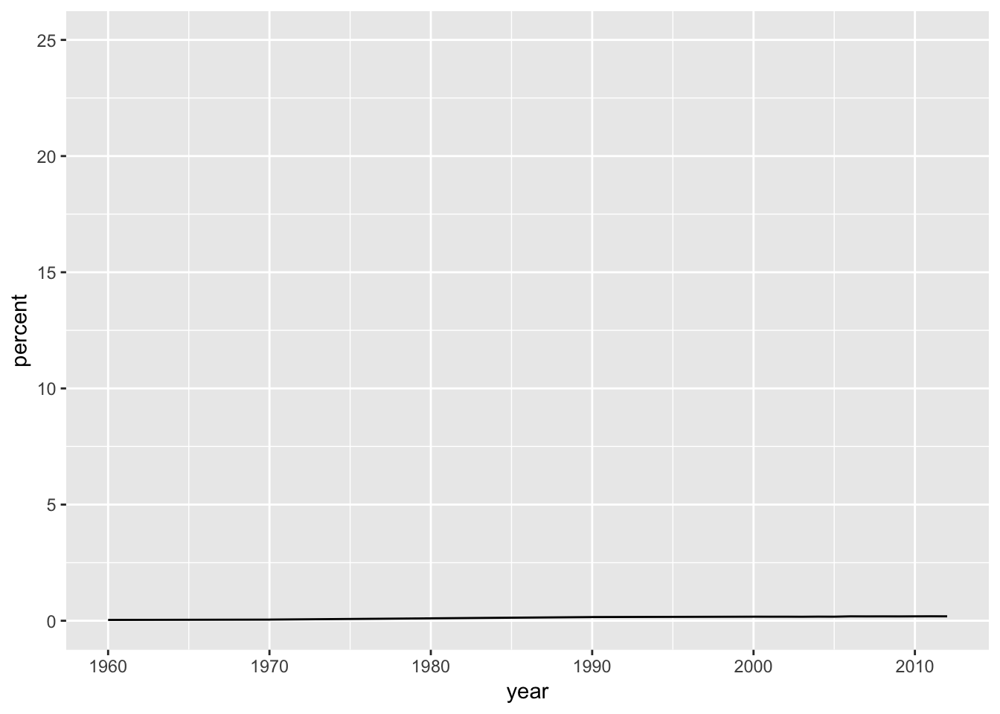
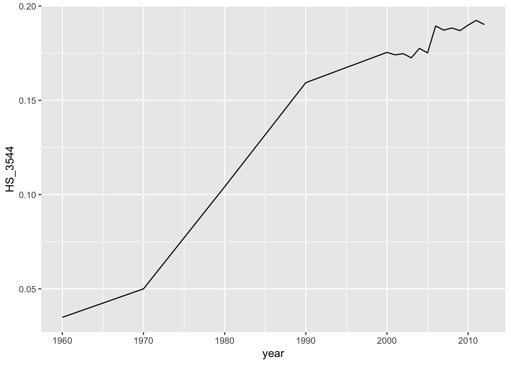
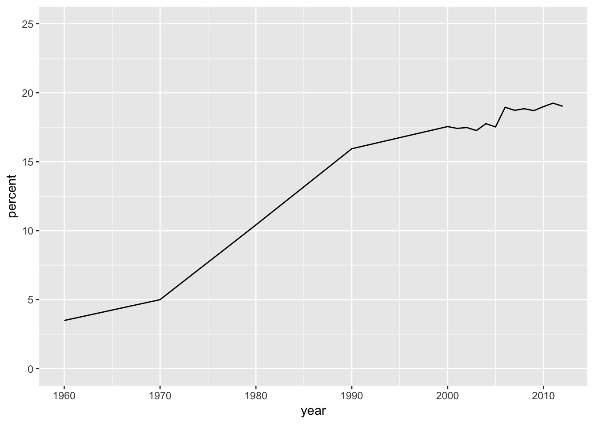
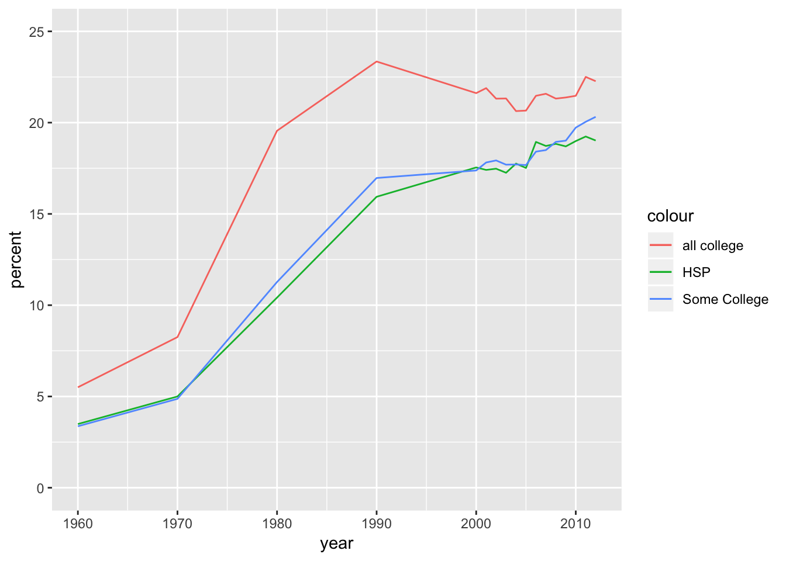
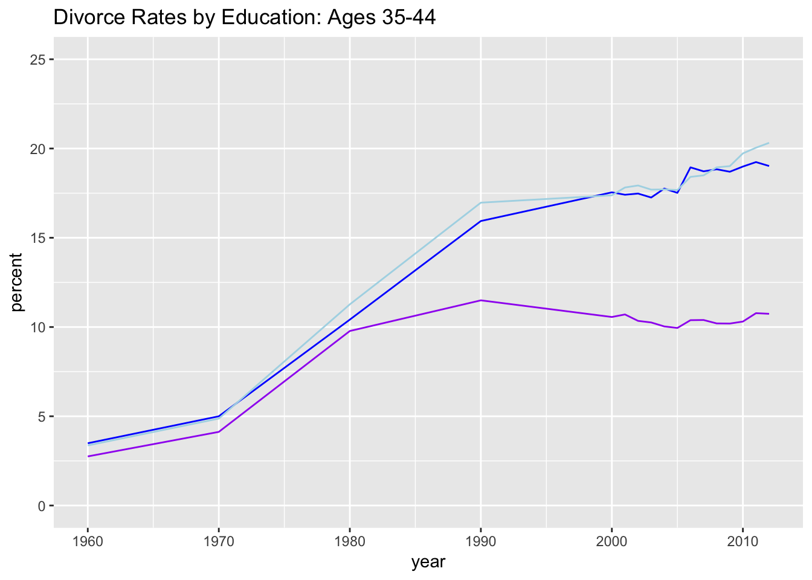
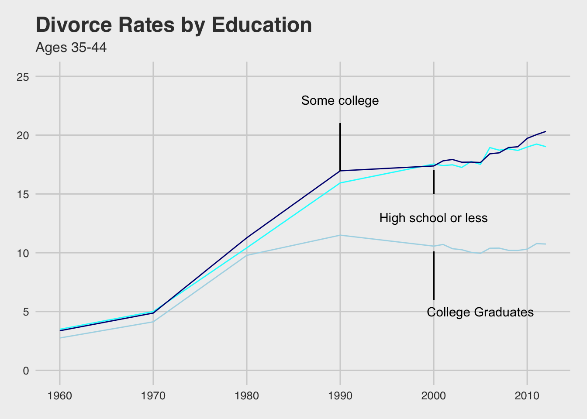

This is an R Markdown document. Markdown is a simple formatting syntax for authoring HTML, PDF, and MS Word documents. For more details on using R Markdown see http://rmarkdown.rstudio.com.
Load the libraries
library(tidyverse)
library(RCurl)## Warning: package 'RCurl' was built under R version 3.5.2## Loading required package: bitops##
## Attaching package: 'RCurl'## The following object is masked from 'package:tidyr':
##
## completelibrary(dplyr)
library(readr)
library(scales)##
## Attaching package: 'scales'## The following object is masked from 'package:purrr':
##
## discard## The following object is masked from 'package:readr':
##
## col_factorlibrary(ggthemes)## Warning: package 'ggthemes' was built under R version 3.5.2Load the data
test3 <- getURL("https://raw.githubusercontent.com/fivethirtyeight/data/master/marriage/divorce.csv")
divorcedata <- read.csv(text = test3)This was an attempt at finding a code to make the y scale a percent. The code tested was (This code is not in a code chunk because the file will not knit wiht in incorrect code): scale_y_continous(labels=scales::percent)
This code chunk was on trying to find a way to convert data to percents
help(percent)
HS_percent <- percent(divorcedata$HS_3544)
divorcedata$HS_percent = divorcedata$HS_3544*(100)The follwing are attempts at converting data to percents. They did not list how they come up with “completed college” variable, so i had to try various different ways and then graph them to see if i got the same line that they did.
divorcedata$HS_percent = divorcedata$HS_3544*(100)
divorcedata$HSP = divorcedata$HS_3544*(100)
divorcedata$CSTotal = divorcedata$BAp_3544 + divorcedata$BAo_3544 + divorcedata$GD_3544
divorcedata$CSTotal2 = divorcedata$BAp_3544 + divorcedata$BAo_3544
divorcedata$CSP2 = divorcedata$CSTotal2*(100)
divorcedata$CSP = divorcedata$CSTotal*(100)
divorcedata$SCP = divorcedata$SC_3544*(100)I am attempting at plotting just one line with a percent. Failed due to scale_y_ continous: HS <- ggplot(divorcedata) + geom_line(mapping = aes(x = year, y = HS_3544)) HS + scale_y_continous(labels=scales::percent)
This is an attempt at plotting one line
HS <- ggplot(divorcedata) +
geom_line(mapping = aes(x = year, y = HS_3544))Keeping code that i wanted to try to use to plot the percent, and the limit i wanted to set it too
scale_y_continuous(name = "percent", limits = c(0, 25))## <ScaleContinuousPosition>
## Range:
## Limits: 0 -- 25Here I tested out the scaling code with the plotting code. It was not working.
ggplot(divorcedata) +
geom_line(mapping = aes(x = year, y = HS_3544)) + scale_y_continuous(name = "percent", limits = c(0, 25))
This is when i tried to make the graph of divorce rates by education
ggplot(divorcedata) +
geom_line(mapping = aes(x = year, y = HS_3544))
I had to do further testing of various percents to match theirs. I wish more infomration had been given on how they went from teh dataset to the variables in the graph.
divorcedata$HS_percent = divorcedata$HS_3544*(100)
divorcedata$HSP = divorcedata$HS_3544*(100)
divorcedata$CSTotal = divorcedata$BAp_3544 + divorcedata$BAo_3544 + divorcedata$GD_3544
divorcedata$CSTotal2 = divorcedata$BAp_3544 + divorcedata$BAo_3544
divorcedata$CSP2 = divorcedata$CSTotal2*(100)
divorcedata$CSP = divorcedata$CSTotal*(100)
divorcedata$SCP = divorcedata$SC_3544*(100)Succesful maping with one percent. now time to add in more lines
ggplot(divorcedata) +
geom_line(mapping = aes(x = year, y = HSP)) +
scale_y_continuous(name = "percent", limits = c(0, 25))
Figuring out how to get colors to match the best
ggplot(divorcedata) +
geom_line(mapping = aes(x = year, y = HSP, color = "HSP")) +
geom_line(mapping = aes(x = year, y = SCP, color = "Some College")) +
geom_line(mapping = aes(x = year, y = CSP2, color = "all college")) +
scale_y_continuous(name = "percent", limits = c(0, 25)) 
The final percents for the other two variables
divorcedata$HSP = divorcedata$HS_3544*(100)
divorcedata$SCP = divorcedata$SC_3544*(100)
divorcedata$BAP = divorcedata$BAp_3544*(100)Trying to get labels
ggplot(divorcedata) +
geom_line(mapping = aes(x = year, y = HSP), color = 'blue') +
geom_line(mapping = aes(x = year, y = SCP), color = 'light blue') +
geom_line(mapping = aes(x = year, y = BAP), color = 'purple') +
scale_y_continuous(name = "percent", limits = c(0, 25)) +
ggtitle("Divorce Rates by Education: Ages 35-44") +
scale_color_discrete(name = "education level", breaks=c("HSP", "SCP", "BAP"), labels=c("High School", "Some College", "Bachelors")) +
theme(legend.position = "right")
More attempts at labeling on graph (not included in a code chunk because file will not knit) ggplot(divorcedata) + geom_line(mapping = aes(x = year, y = HSP), color = ‘blue’) + geom_line(mapping = aes(x = year, y = SCP), color = ‘light blue’) + geom_line(mapping = aes(x = year, y = BAP), color = ‘purple’) + scale_y_continuous(name = “percent”, limits = c(0, 25)) + ggtitle(“Divorce Rates by Education: Ages 35-44”) + scale_color_discrete(name = “education level”) + geom_dl(aes(label = Education), method = list(dl.combine(“first.points”, “last.points”), cex = 0.8)
still working, but can’t get the labels exaclty how I would like them
ggplot(divorcedata) +
geom_line(mapping = aes(x = year, y = HSP, label = "High School"), color = 'blue') +
geom_line(mapping = aes(x = year, y = SCP), color = 'light blue') +
geom_line(mapping = aes(x = year, y = BAP), color = 'purple') +
scale_y_continuous(name = "percent", limits = c(0, 25)) +
ggtitle("Divorce Rates by Education: Ages 35-44") ## Warning: Ignoring unknown aesthetics: labelAND FINALLY ALL THE PIECES TOGETHER. The code below produced my most successful figure! I also attempted to match the colors to the one online, which only used shades of blue.
ggplot(divorcedata) +
geom_line(mapping = aes(x = year, y = HSP), color = 'cyan') +
geom_line(mapping = aes(x = year, y = SCP), color = 'navy blue') +
geom_line(mapping = aes(x = year, y = BAP), color = 'light blue') +
scale_y_continuous(name = "percent", limits = c(0, 25)) +
labs(title = "Divorce Rates by Education", subtitle = "Ages 35-44", x = "years") +
annotate("text", x= 1990, y = 23, label = "Some college") +
annotate("text", x= 2000, y = 13, label = "High school or less") +
annotate("text", x= 2005, y = 5, label = "College Graduates") +
theme_fivethirtyeight() +
geom_segment(aes(2000, 6, xend = 2000, yend =10.1)) +
geom_segment(aes(2000, 15, xend = 2000, yend = 17)) +
geom_segment(aes(1990, 17, xend = 1990, yend = 21))
The original plots and article can be found at: https://fivethirtyeight.com/features/marriage-isnt-dead-yet/